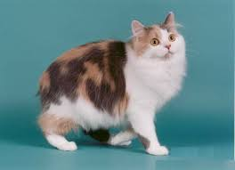

|  |
| Cymric |
BEHAVIOR
The Cymric cat is a very quiet, playful and intelligent cat. It can be a little shy and reserved around strangers and tends to bond very closely with one individual. It is a breed that seems to keep its kitten-like behaviour well into adulthood.
GROOMING
The Cymric Cat has a long, soft, silky double coat. The luxurious coat requires a bit of care to stay in pristine condition. The coat is also prone to matting. So it requires regular grooming. Brush your cat three times a week with a slicker brush like this one from Hertzko. The Cymric is also a breed that sheds a lot. So during the shedding season, this cat starts to lose its undercoat and needs daily brushing.
HEALTH PROBLEMS
The lack of a tail is a severe genetic defect and the Cymric cat's 'deformed' spine may cause health problems including arthritis from an early age. In some cats the anal passage may be narrowed and this can cause bowel blockages. As with all cats, Cymric cats and kittens need vaccinations, parasite control and annual veterinary health checks.
NUTRITION
A controlled amount of good quality food (wet or dry) , served in an interactive bowl is ideal for the Cymric. Excess consumption must be avoided, as they are susceptible to becoming overweight.